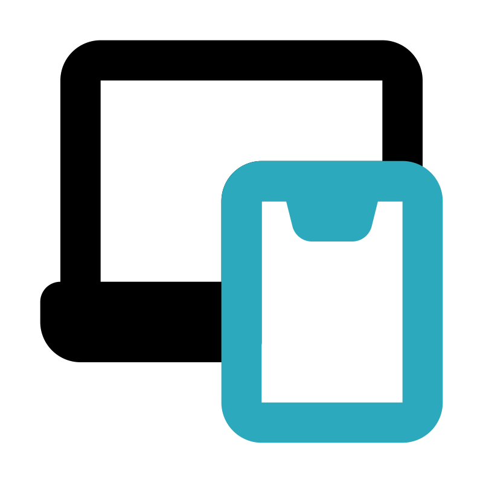

¿MIS HABILIDADES?
Apasionado por el diseño, la creatividad y la tecnología. El desarrollo web representa la combinación perfecta entre lo visual y lo funcional, y es ahí donde se potencia el valor de cada proyecto. Con formación constante y experiencia práctica, se integran conocimientos de diseño, desarrollo y marketing digital para ofrecer soluciones completas y con propósito. Gracias a una sólida base en diseño, cada trabajo se aborda con una mirada estética y funcional. La experiencia en redes sociales y estrategias digitales permite además pensar cada sitio desde una perspectiva comunicacional, orientada a resultados.
Aptitudes
Resolutivo, curioso y proactivo. Facilidad para adaptarse a nuevos desafíos, trabajar en equipo y sumar valor en todas las etapas de un proyecto digital.
Otros conocimientos
Además de mis habilidades técnicas en desarrollo web, cuento con experiencia en áreas complementarias como el marketing digital y el diseño. Manejo herramientas como Adobe Photoshop, Illustrator, Premiere y CorelDRAW, que me permiten trabajar con contenido visual, edición de video y piezas gráficas de forma profesional. También tengo conocimientos en tecnología aplicada al streaming, lo que me da una mirada más amplia sobre la producción y difusión de contenido en línea.
Tecnologías con las que trabajo
 HTML: La base de toda
página web. Me permite estructurar el contenido de forma clara y semántica.
HTML: La base de toda
página web. Me permite estructurar el contenido de forma clara y semántica.
 CSS: Con esta herramienta doy estilo y vida a los sitios. Trabajo
con diseños responsivos, animaciones
y layouts modernos.
CSS: Con esta herramienta doy estilo y vida a los sitios. Trabajo
con diseños responsivos, animaciones
y layouts modernos. JavaScript: Aporto interactividad y dinamismo a las
interfaces, enfocándome en la experiencia del
usuario.
JavaScript: Aporto interactividad y dinamismo a las
interfaces, enfocándome en la experiencia del
usuario. Git & GitHub: Utilizo control de versiones para mantener un registro ordenado de mis proyectos y
colaborar de forma eficiente.
Git & GitHub: Utilizo control de versiones para mantener un registro ordenado de mis proyectos y
colaborar de forma eficiente. Figma: Diseño
prototipos y maqueto interfaces con precisión, cuidando tanto lo visual como la
usabilidad.
Figma: Diseño
prototipos y maqueto interfaces con precisión, cuidando tanto lo visual como la
usabilidad.- Responsive Design: Desarrollo sitios adaptables a todo tipo de pantallas, priorizando la experiencia mobile-first.